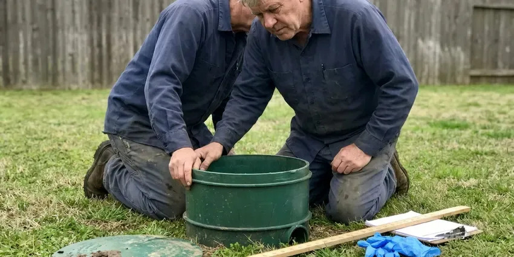

Trenchless Sewer Line Repair in Paragould, AR
Our Paragould, AR crew replaces failing sewer laterals from two small pits, pulling new HDPE pipe through the old one over one or two days.
- Before and After Video
- Jointless Liners Roots Can't Enter
- Locator Marks the Exact Break
- HDPE Pipe Replacement
Sewer Line Broken in Paragould, AR?
Book a camera inspection and find out if your line can be lined or needs bursting.
Trenchless Sewer Line Repair in Paragould, AR
Root intrusion and corrosion account for most of the sewer calls we see in Paragould. Roots work their way into every joint of a clay line, and cast iron rusts from the inside until the bottom of the pipe rots out. DGR Plumbing cuts the roots, descales the iron and then seals the line with a cured-in-place liner that has no joints left for roots to find. No trench needed.
Some of what we do:
- Pipe bursting with fused HDPE for full lateral replacement.
- Camera inspection with depth and location tracking
- Cast iron descaling before lining

Additional Plumbing Repair Services in Paragould, AR
We offer expert plumbing repair services across Paragould, AR to stop leaks, clear blockages, and keep every fixture working the way it should.




Professional septic tank repair, Paragould

Customers
Why Choose DGR Plumbing for Trenchless Sewer Line Repair in Paragould, AR?
Trenchless repair often costs about the same as digging once you add back concrete and sod. It also finishes faster. You will not have an open trench in the yard for a week, and there is no settling dirt to top off next spring when the backfill sinks.
- Lower Restoration Cost, No trench means no new driveway slab and no resodding the front lawn.
- Long Service Life, Liners and HDPE pipe carry a 50-year design life when installed right.
- Less Restoration, Small access points mean less concrete cutting and less yard repair.
Citywide Coverage
Houses and small commercial buildings anywhere in Paragould are fair game for trenchless repair. The equipment fits tight lots, side yards and alley access points. A 4-inch house lateral is the most common job, but we also line 6-inch lines behind small shops and offices.
Experienced Team
The same crew that lines pipe also digs, so they know when a dig is the better call. That honesty saves money. They have worked lines under slabs and driveways, plus a few that ran beneath swimming pools and additions built long after the sewer went in.
Safety-First Approach
Open pits get barricades and covers at the end of each day. That keeps kids and pets out of the hole overnight. Anything deeper than five feet gets shored or sloped, which is the federal OSHA trench rule and the one we follow on every burst no matter how shallow the run looks at first.
Trusted Certified Paragould Plumbing Services Professionals
At DGR Plumbing, we take pride in licensed, certified plumbing services throughout Paragould, AR. Those papers on the wall mean something. Every repair, install and maintenance visit follows strict safety and quality rules, and the plumbers doing the work carry recognized industry credentials.
Call Us Now PHCC Plumbing Contractor Recognition
PHCC Plumbing Contractor Recognition Better Business Bureau (BBB) Accreditation
Better Business Bureau (BBB) Accreditation Angi Certified Pro
Angi Certified Pro ISO 9001 Quality Management Certification
ISO 9001 Quality Management CertificationSewer Lining and Pipe Bursting in Paragould, AR
Perma-Liner and NuFlow Lining Systems in Paragould
Perma-Liner and NuFlow both make lining systems we use, each with its own resin chemistry and installation equipment. Both systems are made to meet the ASTM standards written for cured-in-place pipe. The brand matters less than the prep, because a liner bonded to a dirty, scaly pipe wall will not hold the way the manufacturer rates it. We clean to bare pipe first.

Trenchless vs Traditional Sewer Repair Costs in Paragould, AR
Compare total cost, not just the plumbing line on the invoice. A dig job looks cheaper on paper, until you add saw-cutting the driveway and pouring new concrete over a trench that may run 50 feet. Most of those extra costs never show up with a liner or a burst. Sod and sprinkler repair add up too.
Trenchless Drain Pipe Repair in Paragould, AR
Smaller drain lines inside the house can be lined too, including 2-inch kitchen drains and the 3-inch cast iron stacks found in many older homes. We work through cleanouts and roof vents, so the drywall and tile stay where they are. After curing, a small robotic cutter reopens each branch connection from inside the pipe. That saves opening a finished wall.
Pipe Bursting Sewer Repair in Paragould
Bursting can upsize the line. We can pull in 6-inch HDPE behind a head that bursts an old 4-inch clay pipe, which helps on lines that clog because they were undersized from the start or have been added onto with extra bathrooms. The pit at each end is small. No trench in between.
Cost Comparison of Trenchless vs Traditional in Paragould, AR
Depth changes the math. A line two feet down in open lawn is often cheaper to dig than to line, but a lateral eight feet deep that runs under the driveway and a porch costs far more to excavate than to burst or line from two pits. You get both prices on paper. Then you pick.
Commercial Trenchless Sewer Repair in Paragould, AR
Office and retail buildings often have a cast iron building drain under the slab that has rotted along the bottom. Lining it avoids cutting the floor. We coordinate around tenant hours. A typical commercial lining job runs one to three days, depending on footage and how many branch connections need to be reinstated with a cutter.
Root Intrusion Fixes in Paragould, AR
Roots enter at the joints, where clay bells or cast iron hubs have a small gap or a failed gasket. Once in, they fill the pipe. We cut them out with a mechanical root cutter or a hydro jet, then line the pipe so those joints are sealed for good and the line stops needing a cleaning every few months. The roots cannot get back in.

Emergency Trenchless Sewer Services in Paragould
A sudden collapse usually shows up as every drain in the house backing up at once, often into the lowest tub or floor drain. The first job is getting flow back, usually with a cable or a jetter. Then the camera shows whether the line can be lined or needs a burst. A fully crushed section sometimes needs a short dig before anything else can happen.
No-Dig Sewer Line Repair Near Me in Paragould, AR
Searching for trenchless sewer line repair near me in Paragould, AR usually starts after the second or third backup in a month. DGR Plumbing has camera trucks working Paragould most days. Most of the time a crew can be on site the same day or the next morning, and the camera run takes about an hour. You see the footage before the truck pulls away.
Looking for a trenchless plumber nearby in Paragould, AR? Ask whether they do lining and bursting in-house. DGR Plumbing runs its own lining crew. That keeps the schedule in one place, and it means the person who inspected your line is usually the one who repairs it.
DGR Plumbing at a Glance
- Fully licensed plumbing team covering Paragould, AR
- Same-day appointments and 24/7 emergency response
- Upfront, flat-rate pricing before work begins
- 4.8-star rated by 871+ Arkansas customers
Paragould Map
Paragould Information
- Population
- 30,520
- Area codes
- Local
- Service area
- Paragould and communities within 40 miles
- Nearby
- Jonesboro, Sherwood, Conway, North Little Rock
Expansive clay soils across much of Arkansas swell and shrink with rainfall, which can stress foundations and crack buried sewer lines. Ground that moves pulls clay and cast iron joints apart over time, and a jointless liner or fused HDPE pipe in Paragould, AR holds up to that movement far better.
Talk to a Plumber
Call DGR Plumbing for reliable plumbing work done by licensed pros in Paragould, AR.
Our Specialized Plumbing Services in Paragould, AR
At DGR Plumbing, you get every kind of plumbing service from one company across Paragould, AR. We go from leak detection all the way to full system installations, for homes and commercial buildings, and we do it quickly at a fair price. Here are the core services we offer:


From Camera to Cured Liner, Trenchless Repair in Paragould, AR
This is the order DGR Plumbing works in on a trenchless sewer job in Paragould, AR, start to finish.
Request a Quote
Call DGR Plumbing at (501) 251-9708 and tell us what the drains are doing. We set up a camera inspection at your Paragould property, usually within a day or two.
Sewer Line Inspection
We run a push camera from the cleanout to the main, record the footage and mark the problem spots on the ground with a locator.
Prepare Access Points
Depending on the method, we dig one or two small pits or work straight from the cleanout. Pits are about three feet square.
Frequently Asked Questions About Trenchless Sewer Line Repair in Paragould
Point repairs usually cost $1,500 to $3,500. A full-length liner on a house lateral is often $4,000 to $12,000. Bursting in new pipe tends to run $5,000 to $15,000, depending on the length of the run, how deep the line sits and how easy it is to reach both pits with a mini excavator. We price it after a camera look.
Plan on a day for most lining jobs and one to two days for a burst. A dig can take a week. You only lose use of the drains while the resin cures, which is usually a few hours, so most families never leave the house and can use the toilets again by dinner.
Gurgling toilets, repeat backups, slow drains on the lowest floor and a sewage smell near the floor drain are the usual signs. A lush green strip in the lawn is another. Get a camera inspection first, since the camera shows whether the pipe is cracked, full of roots or simply clogged with grease that a jetter can clear.
Hire it out. The equipment alone costs tens of thousands, and the resin has a working time measured in minutes once it is mixed, so a mistake means a liner hardened in the wrong place inside your sewer. Code requires a licensed plumber anyway.
It handles cracks, fractures, root intrusion and small offsets well. A disintegrated pipe is another story. A deep belly that holds water or a badly separated joint may need a spot excavation, since a liner follows the shape of the host pipe and will copy the sag right along with it. The video decides.
We do, in writing, on workmanship. Liner materials carry separate manufacturer coverage, and we go over the terms before you commit.
Yes, and it is often the best way. Lining a cast iron or ABS drain under a slab saves you from jackhammering floors throughout the home.
Yes, in most places. DGR Plumbing pulls the plumbing permit from the Paragould building department before the crew arrives, and if any work reaches the public right of way we file that permit too. An inspector may also ask to see the final camera video.
What Our Customers Say About Our Plumbing Experts

Angela D.
Our sump pump quit during a storm and the water was an inch from the basement carpet. DGR Plumbing put in a new pump with a battery backup that same evening. We have had two heavy rains since. It kicked on both times.
Sump Pump · North Little Rock, AR
Robert G.
The camera showed a full break in our clay sewer line near the street. DGR Plumbing replaced it with a trenchless pipe burst, so the only digging was two small pits in the yard. They let us watch the footage before and after.
Sewer Line Replacement · Pine Bluff, AR
Monica A.
Our water bill nearly doubled in one month with no change in how we used water. The tech checked the meter, heard the leak under the hallway with his equipment, and opened a hole about a foot square. Fixed the same day.
Slab Leak Repair · Paragould, ARJessica T.
We were adding a gas range in a kitchen remodel and needed a new line run from the meter. The plumber pulled the permit, ran the pipe through the crawl space, and had it inspected and approved within the week.
Gas Line Repair · Pine Bluff, ARJames P.
Our restaurant had a slow leak at the hand sink that was rotting the cabinet base. DGR Plumbing came in at six in the morning before prep, replaced the trap and both supply lines, and was packed up before my first cook clocked in.
Commercial Plumbing · Sherwood, ARLaura S.
Our 40 gallon tank started leaking from the bottom after thirteen years. The tech hauled the old one out, set a new unit with a fresh expansion tank, and had hot water running in about four hours. He took the old tank with him too.
Water Heater Replacement · Pine Bluff, AR